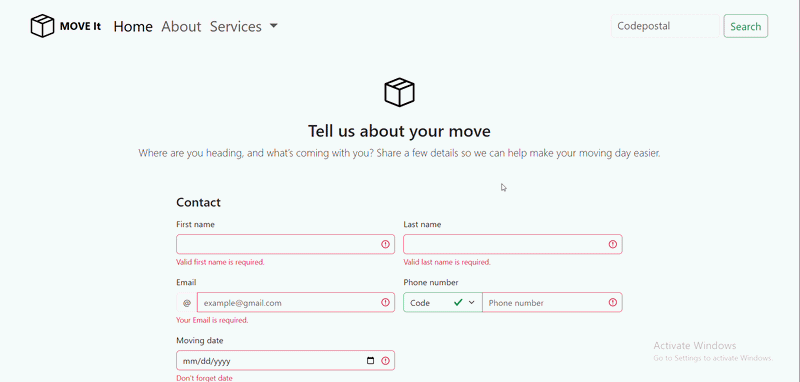
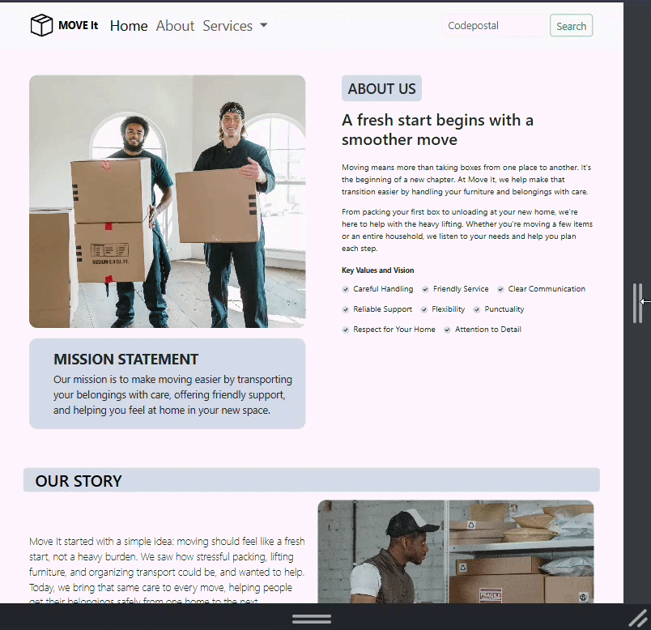
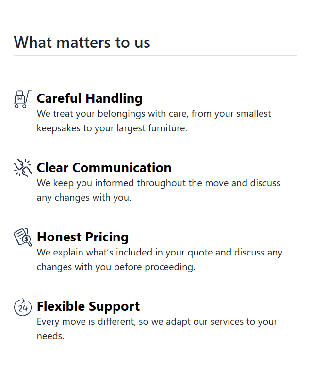
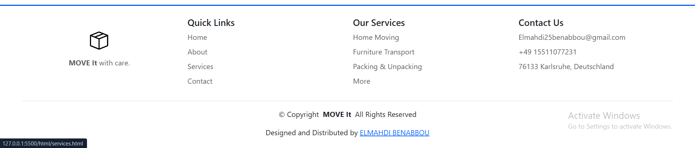
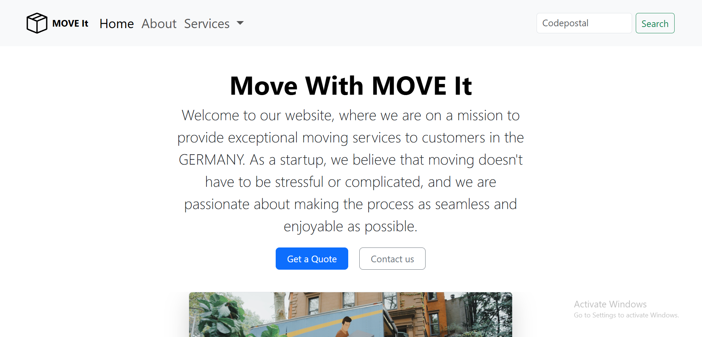

MOVE It 📦
A fresh start deserves a smoother move.
A responsive moving-company website built while learning HTML, CSS, and Bootstrap.
A fresh start deserves a smoother move.
A responsive moving-company website built while learning HTML, CSS, and Bootstrap.
Moving can be stressful. Finding help should feel straightforward.
Move It is my take on a welcoming moving-company website: visitors can discover services, meet the team, and share the details of their next move. I started with Bootstrap components and adapted the content, layout, and styling around one consistent moving-company theme.
This is a fictional business and a frontend learning project. Its purpose is to show how I turn reusable components into a connected website while developing my skills as a future application developer.
A quick tour: start on the homepage, explore the services, then try the moving-request form.





| Area | What it offers |
|---|---|
| Home | A welcoming introduction and navigation to the main pages. |
| About | The company story, mission, values, and fictional team. |
| Services | Home moving, furniture transport, and packing and unpacking. |
| Moving request | Contact details, calling code, moving information, and space for additional instructions. |
| Helpful details | A step-by-step moving guide and frequently asked questions. |
| Responsive layout | Navigation, cards, and columns that adapt to different screen sizes. |
| Footer | Quick links, service links, and contact information. |
The contact experience helps visitors explain their move rather than simply sending a generic message. It includes personal details, a country calling code, a move type, and additional comments.
Demo limitation: form validation and confirmation messages are frontend interactions. Without a connected backend or form service, they do not send email, save a request, arrange a call, or create a booking. A success modal alone is not proof that information was received.
Bootstrap interactive components require its JavaScript bundle. Follow the dependency links already included in the project's HTML files.
Replace YOUR_REPOSITORY_NAME with the actual repository name:
git clone https://github.com/Elmahdi25/YOUR_REPOSITORY_NAME.git
cd YOUR_REPOSITORY_NAME
You can also download the repository ZIP from GitHub and extract it.
From the project folder, run one of these commands if Python is installed:
# Windows
py -m http.server 8000
# macOS / Linux
python3 -m http.server 8000
Open http://localhost:8000 in your browser. If the homepage is not named index.html, open its filename from the directory listing.
Alternatively, use VS Code's Live Server extension and open the homepage with Live Server.
No package-install command is included because this README describes a plain HTML/CSS project. Internet access is needed for any dependencies loaded through CDN links.
This project helped me understand the difference between making something look right at one size and making it work across different layouts.
object-fit and avoiding distorted icons.Suggestions are welcome, especially around responsive layouts, accessibility, and form usability.
If you find something that could work better, open an issue with the page, screen size, and steps to reproduce it. For a code contribution, fork the repository, make a focused change, and open a pull request explaining what changed and why.
Built and customized by Elmahdi Benabbou.
Some starting components come from Bootstrap examples. Keep a record of any other templates, photos, and icons used, including their source and applicable terms. Third-party assets retain their own licenses and attribution requirements.
If you enjoyed exploring Move It, a star on the repository or useful feedback is appreciated. You can discover more of my work on my GitHub profile.